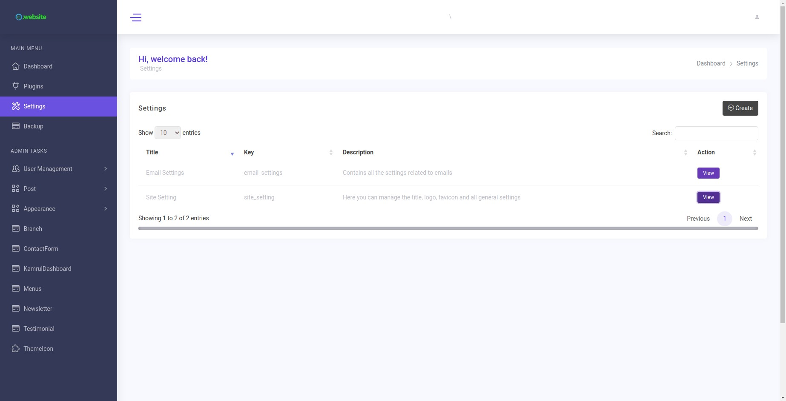
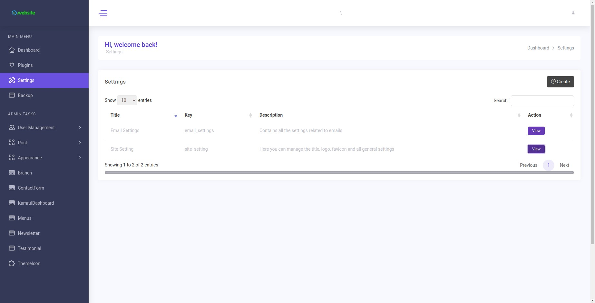

Dashboard
Need to config mail in -> Dashboard.
A dashboard is a way of displaying various types of visual data in one place. Usually, a dashboard is intended to convey different, but related information in an easy-to-digest form.
Need to config mail in -> Dashboard.
A dashboard is a way of displaying various types of visual data in one place. Usually, a dashboard is intended to convey different, but related information in an easy-to-digest form.
